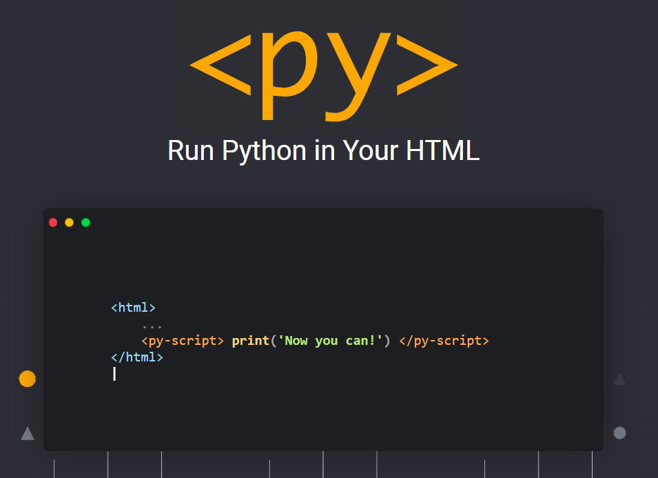

In the past, we could not use the Python language to write on websites, but thanks to the PyScript framework, we can activate the Python code on the browser !.

maxwell construction python code
In thermodynamic equilibrium, a necessary condition for stability is that pressure P does not increase with volume V. This basic consistency requirement—and similar ones for other conjugate pairs of variables—are sometimes violated in analytic models for first order phase transitions. The most famous case is the Van der Waals equation for real gases, see Fig. where a typical isotherm is drawn (black curve). The Maxwell construction is a way of correcting this deficiency. The decreasing right hand part of the curve in Fig. describes a diluted gas, while its left part describes a liquid. The intermediate (rising) part of the curve in Fig. would be correct, if these two parts were to be joined smoothly—meaning in particular that the system would remain also in this region spatially uniform with a well defined density.
relation between P and V in maxwell construction (area 1 = area 2)
run Python code in browser
We will do the special code data for my Maxwell construction project in a web browser where we will take a picture of the equilibrium, temperature and density points for each.
adding python code in html page
See results
you can see results by button
It's not the fastest framework out there
from numpy import*
from matplotlib.pyplot import*
#maxwell construction
P=0.0#P=0.0 #initial value to loop
tem=[] #tempreture list
nv=[]
nl=[]
#t=0.229
t=0.229
for T in arange(t,0.296,0.001):
for p in arange(P,0.2,0.0001):
P=p #when back to looby it is take short time to achive the error
if p >= 0.03317:
P=p+0.000505
if p >= 0.0352 :
P=p+0.000605
if p >= 0.03626 :
P=p+0.0008
r=[] #clearing roots listes
k=[]
#newtonRaphson method
for x0 in arange(0.1,0.9,0.001): #the range to find the three roots
def func( x ):
return x*T/(1-x) -x*x -p # adding (-p) makes a points like a roots (we cheats the finding roots program)
def derivFunc( x ):
return (T/(1-x)**2) -2*x
# Function to find the root
def newtonRaphson( x ):
h = func(x) / derivFunc(x)
while abs(h) >= 0.00000001:
h = func(x)/derivFunc(x)
# x(i+1) = x(i) - f(x) / f'(x)
x = x - h
r.append(x)#مكررة قيم تتطلع
# Initial values assumed
newtonRaphson(x0)
r.sort()#تصاعدي القيم نرتب
n=len(r)#القيم عدد ايجاد
#k=[]#تكرار دون الجذور
k.append(r[0])
for i in range(1,n):
if r[i]-k[-1]<=.0000009: #
d=1# if جملة لاكمال فقط بالمشروع له علاقة لا
else:
k.append(r[i])
#if k[1] true
def y( c ): #trabezoid method #first area integral , we can complits this with 1 integration from root(point) 1 to 3
return c*T/(1-c)-c**2 -p #but we choose two integrals.
def tra1(a, b, n): #note**adding (-p)make this easier to integrating , without(-p) we most be use double integral
h = (b - a) / n
s = (y(a) + y(b))
i = 1
while i < n:
s += 2 * y(a + i * h)
i += 1
return ((h / 2) * s)
x10 = k[0] #lower limit
x2n = k[-1] #upper limit
n = 100
I1=tra1(x10, x2n, n) #I1 name to the first area
if abs(I1) <=0.00005:#0.00005
print("at T=" , T , "p=",p) # achieves the error so move to another degree of T
print( 'roots', k)
tem.append(T) #lists to graph between T,n
nv.append(k[0])
nl.append(k[-1])
break
from numpy import*
from matplotlib.pyplot import*
#maxwell construction
P=0.0#P=0.0 #initial value to loop
tem=[] #tempreture list
nv=[]
nl=[]
#t=0.229
t=0.229
for T in arange(t,0.296,0.001):
for p in arange(P,0.2,0.0001):
P=p #when back to looby it is take short time to achive the error
if p >= 0.03317:
P=p+0.000505
if p >= 0.0352 :
P=p+0.000605
if p >= 0.03626 :
P=p+0.0008
r=[] #clearing roots listes
k=[]
#newtonRaphson method
for x0 in arange(0.1,0.9,0.001): #the range to find the three roots
def func( x ):
return x*T/(1-x) -x*x -p # adding (-p) makes a points like a roots (we cheats the finding roots program)
def derivFunc( x ):
return (T/(1-x)**2) -2*x
# Function to find the root
def newtonRaphson( x ):
h = func(x) / derivFunc(x)
while abs(h) >= 0.00000001:
h = func(x)/derivFunc(x)
# x(i+1) = x(i) - f(x) / f'(x)
x = x - h
r.append(x)#مكررة قيم تتطلع
# Initial values assumed
newtonRaphson(x0)
r.sort()
n=len(r)
#k=[]#
k.append(r[0])
for i in range(1,n):
if r[i]-k[-1]<=.0000009: #
d=1
else:
k.append(r[i])
#if k[1] true
def y( c ): #trabezoid method #first area integral , we can complits this with 1 integration from root(point) 1 to 3
return c*T/(1-c)-c**2 -p #but we choose two integrals.
def tra1(a, b, n): #note**adding (-p)make this easier to integrating , without(-p) we most be use double integral
h = (b - a) / n
s = (y(a) + y(b))
i = 1
while i < n:
s += 2 * y(a + i * h)
i += 1
return ((h / 2) * s)
x10 = k[0] #lower limit
x2n = k[-1] #upper limit
n = 100
I1=tra1(x10, x2n, n) #I1 name to the first area
if abs(I1) <=0.00005:#0.00005
tem.append(T) #lists to graph between T,n
nv.append(k[0])
nl.append(k[-1])
break
fig, ax = subplots()
ax.plot(nv,tem,nl,tem)
xlabel('nv and nl')
ylabel('Tempreture')
fig